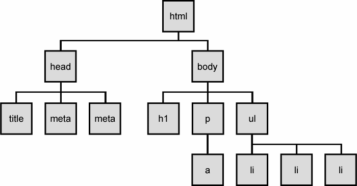
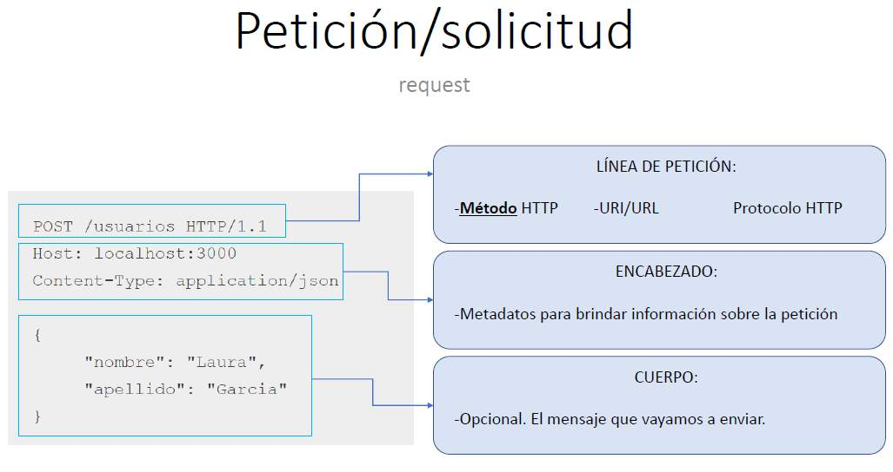
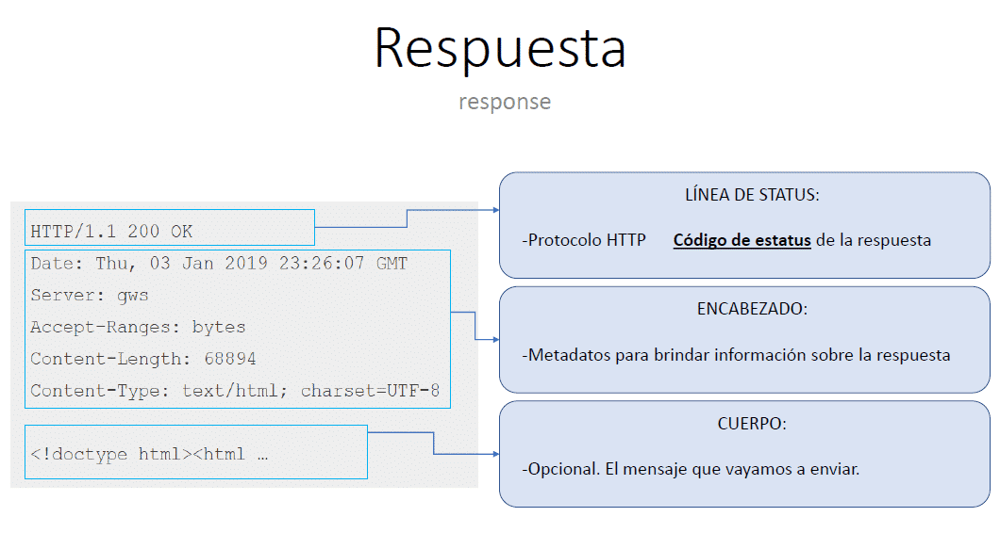

El DOM (Document Object Model) es una estructura que permite acceder y manipular elementos de páginas HTML a través de nodos, es fundamental para el desarrollo de aplicaciones web interactivas y dinámicas. El DOM transforma automáticamente las páginas web en un "árbol de nodos", donde cada etiqueta HTML se convierte en un nodo de tipo "Elemento". Esto facilita tareas comunes como obtener valores de formularios, crear o eliminar elementos dinámicamente y manipular clases de elementos. Estas modificaciones se hacen a traves de metodos para acceder a los nodos: getElementById, getElementsByTagName, getElementsByClassName, etc.
Por ejemplo, al hacerle click al siguiente botón, se produce un cambio dinamico en la pagina web.
Este funciona como un protocolo de peticion-respuesta entre el cliente (un navegador web) y un servidor (una computadora que aloja un sitio web).
Por ejemplo: un navegador web envia un pedido al servidor:
Luego, el servidor responde al cliente con la informacion de estado
Algunos de estos metodos son:
Puedes leer mas sobre estos metodos en w3schools
fetch es una funcion de Javascript que permite realizar solicitudes HTTP para, por ejemplo, obtener informacion de un usuario o cargar un listado de productos. La sintaxis basica es: let promise= fetch(url, [options]), donde la promesa devuelve una respuesta en cuanto el servidor responda.
Si el fetch no puede hacer el pedido HTTPS, hay diferentes estados que puede retornar: